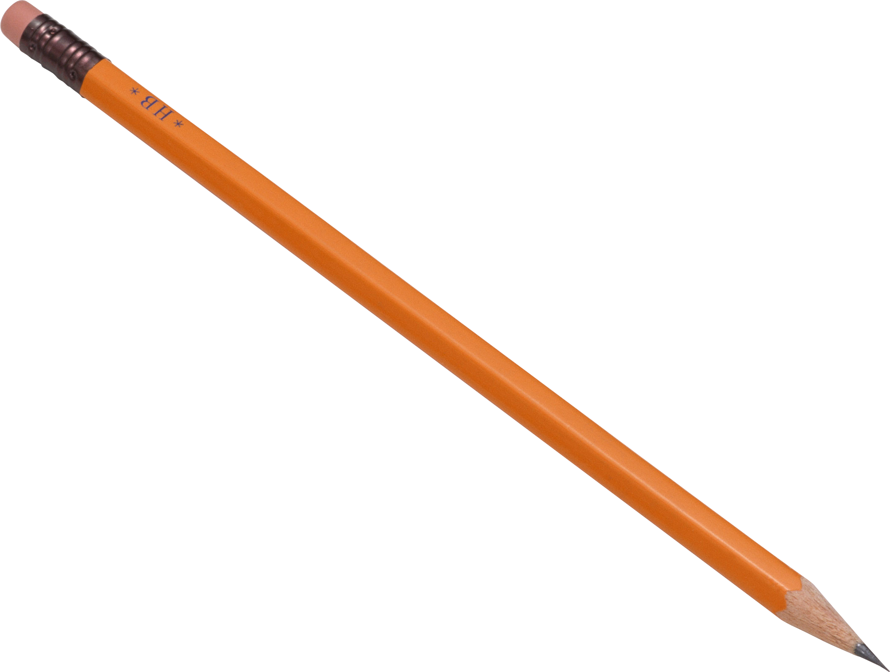
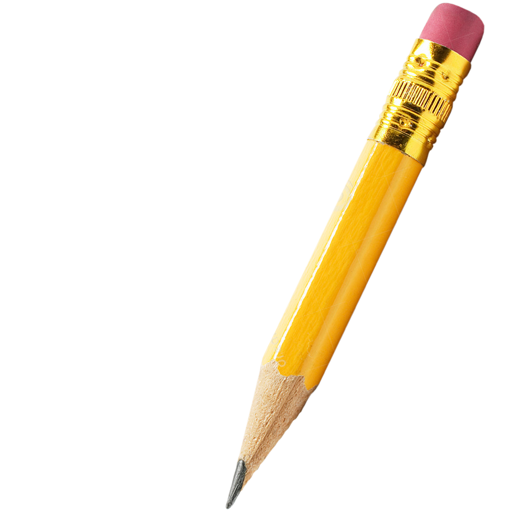

어느 산골 평범한 마을의 오리
농장에는 평범한 오리들이 평범한
일상을 보내며 살고 있었어요.


평범한 오리는 오리 학교에서 공부를
하고 수능을 쳐서 성적에 맞춰
대학을 가고 졸업을 했어요.

평범한 오리는 졸업을 하고 취업을 하기
위해 여러 군데 이력서를 넣었지만
취업난으로 인해 쉽지 않았어요.

평범한 오리는 결국 전공과는 전혀 다른
일을 하게 돼요. 하지만 상관없었어요.
어차피 평범한 오리는 꿈이 없었으니까요.

열심히 일한 평범한 오리는 많은 돈을
벌게 돼요. 하지만 여전히 평범한 오리의
삶은 평범했어요. 그래서 손대지 말아야
할 유흥에 이끌리고 말아요.

도박은 평범한 오리에게 짜릿한 기분을
주었어요. 그렇게 도박에 중독되고, 모든
재산을 탕진하고 말아요. 그리고 평범한
오리는 더이상 평범하지는 않게 되었죠.
평범하지 않은 오리는 도박빚을 갚기 위해
불법적인 방법으로 돈을 구했고, 감옥을
가게 되어요. 평범하지 않은 오리는 이것이
자신이 바라던 것인가 고민해요.
평범하지 않은 오리는 출소한 후에 자신의
고향으로 돌아가요. 평범하지 않은
오리는 예전과 같은 삶을 살면서 예전과
같이 평범해져 가고 있었어요.
하지만 평범해지는 오리는 예전과 같은
평범한 오리이지는 않을 거예요. 평범해지는
오리는 그만의 삶을 살아갈 거니까요.
평범하지만 다른 삶을 살아갈 거니까요.
작가의 말
현대 사회는 '이상적인 사회인', '일반인'의 틀을 만들어 놓고 그 틀에 맞지 않는 사람을 틀렸다고 말합니다.
남들과 다르게 행동하는 것을 무서워하고 남들과 같은 생각을 하면서 자신의 주체는 잃은 채로 살아가게 만들고 있죠.
현대인들은 이러한 삶에 안정감을 느끼면서도 동시에 무력감을 느낍니다.
도전하지 않는다고 해서 겁쟁이라고 비난하지는 않습니다.
여러분이라는 존재가 이 세상에서 유일하다는 것만으로도, 여러분은 평범하되 평범하지 않은 삶을 살고 있습니다.